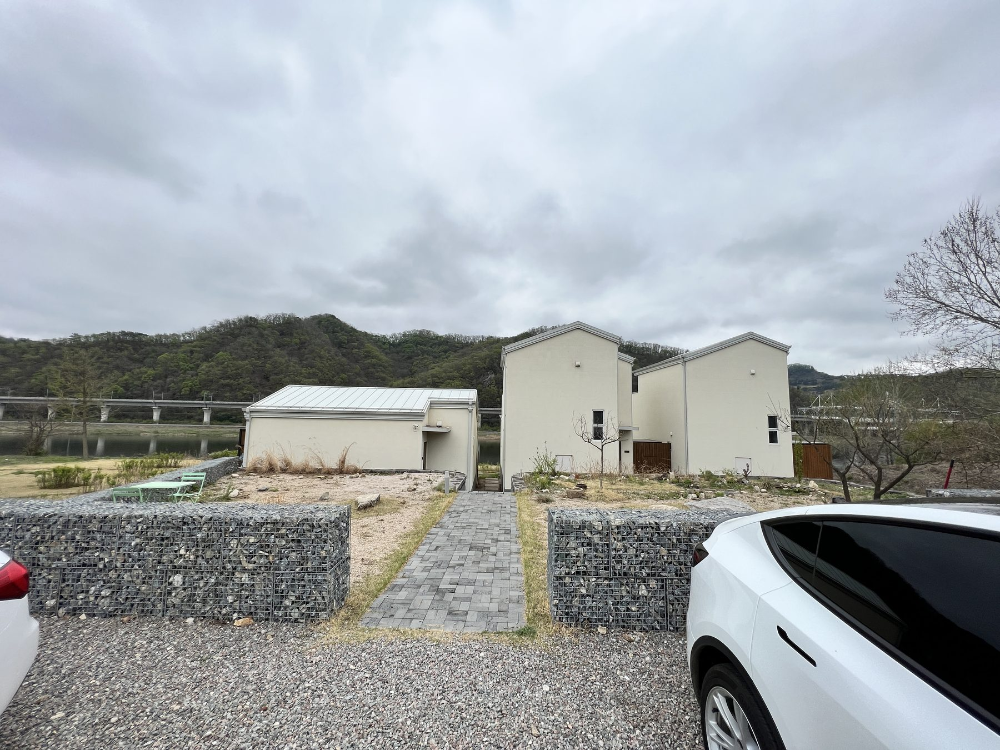
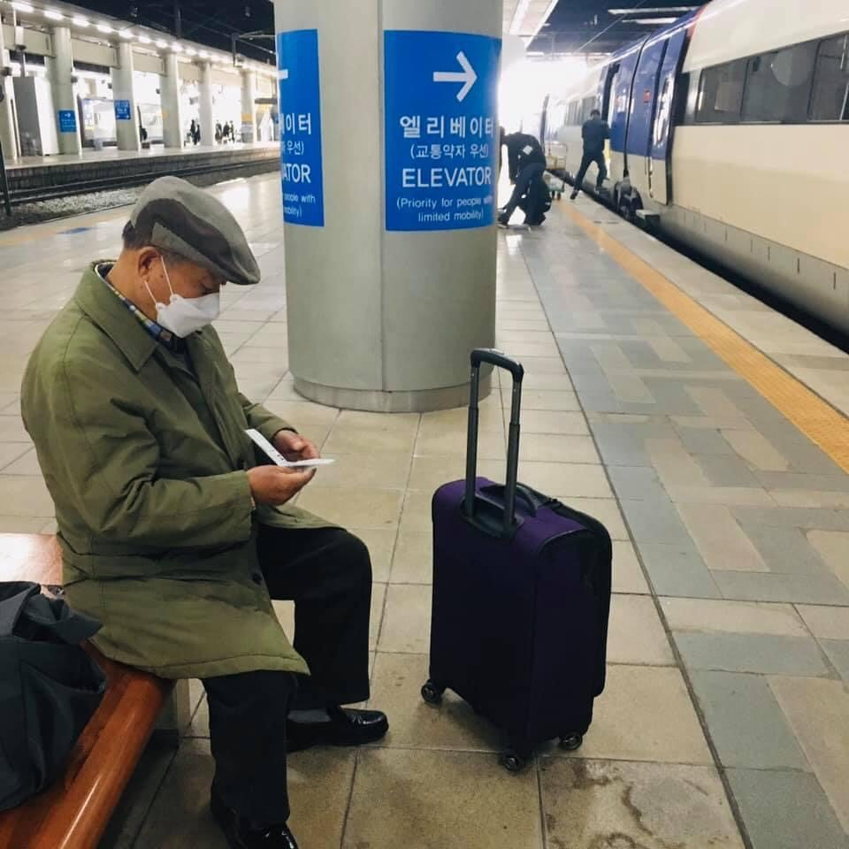
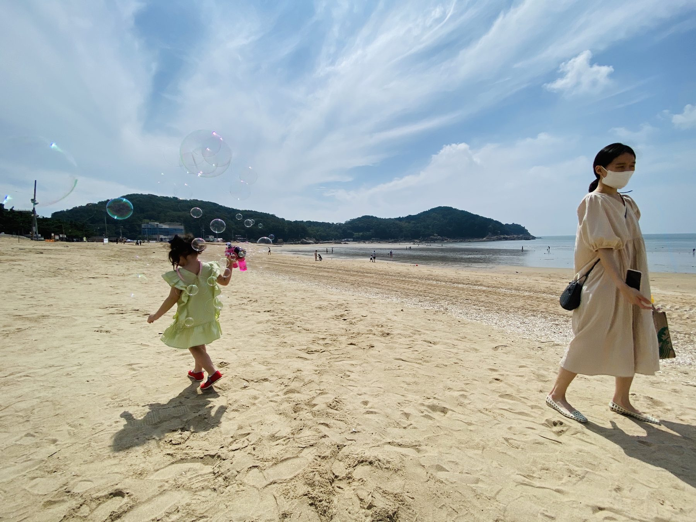
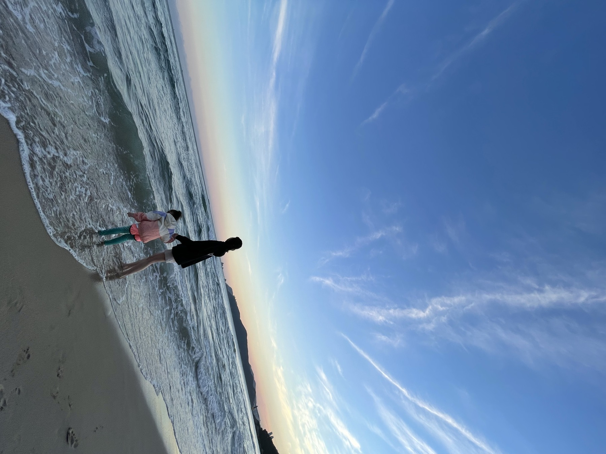
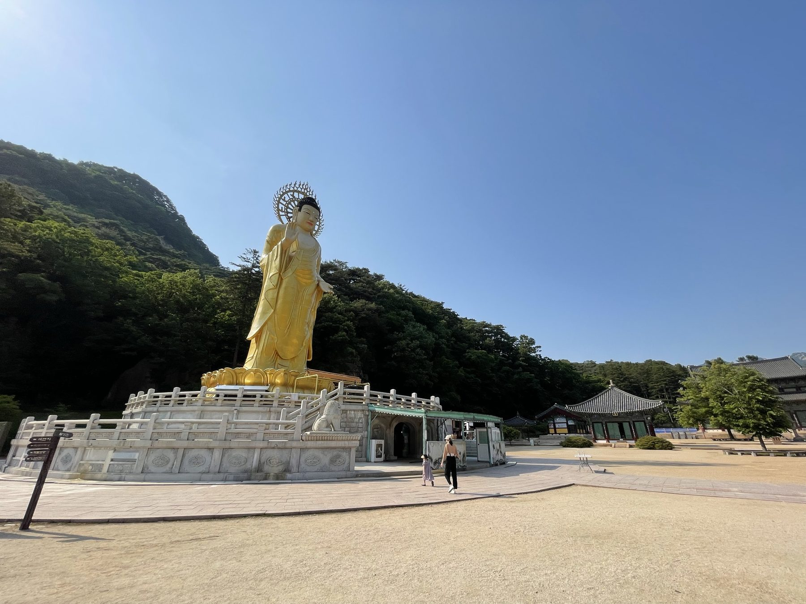
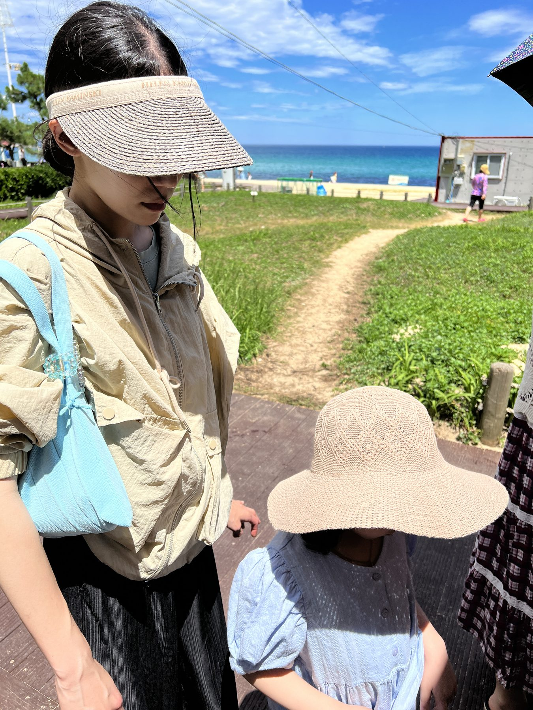
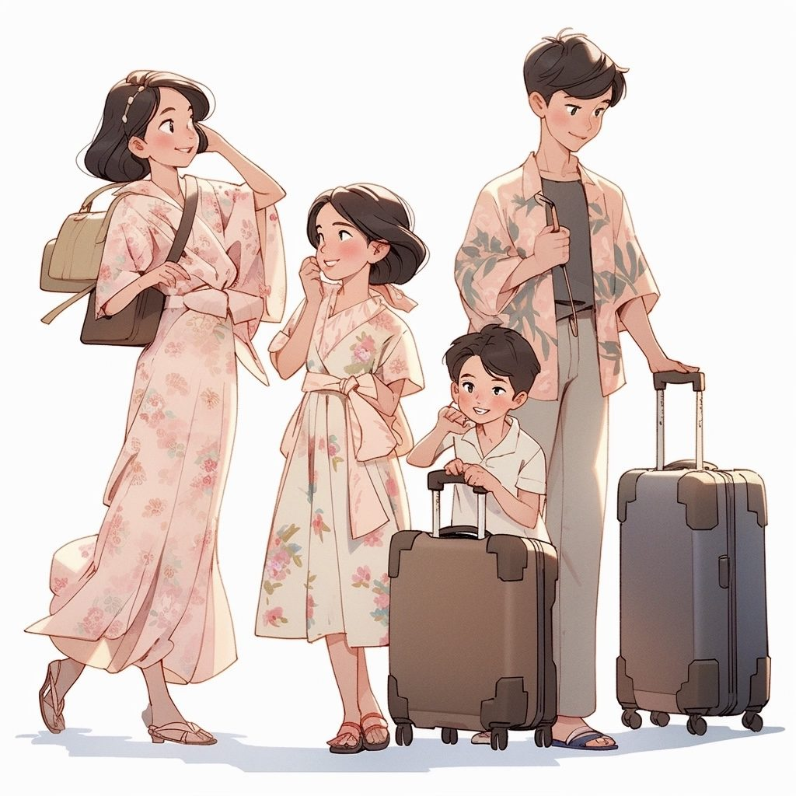

Travel
Travel / 여행
자리를 옮겨 보는 별
Welcome note
서 있는 자리가 바뀌면 보이는 게 달라진다. 모르는 곳에서 다른 생각을 하면, 거기서 뜻이 생긴다. 자리를 옮겨 보는 그 버릇이, 내 번역의 방식이 됐다.
전문가의 자리에서 보던 걸 청중의 자리로 옮겨 보는 일. 그게 내가 하는 번역이다.

글 / 사진 기록
기존 글과 사진을 차례로 정리할 자리입니다.

자리를 옮기며 남은 길의 흔적



